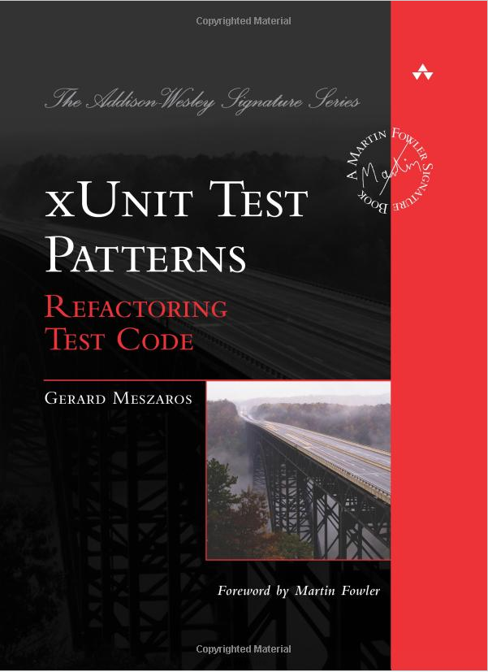
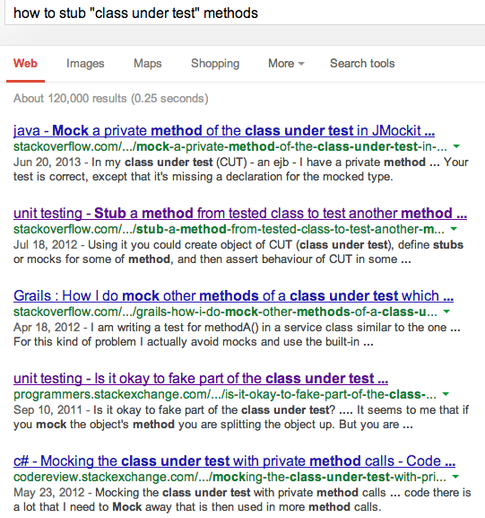

Always green!



class GitStatusDecorator
def initialize(git_status)
@git_status = git_status
end
def status
"#{dirty}"
end
def dirty
"WTF!"
end
end
describe "GitStatusDecorator #status" do
context "when some files have been changed" do
before do
@decorator = GitStatusDecorator.new("M spec/example_spec.rb")
end
it do
@decorator.stub dirty: '*'
@decorator.status.should end_with('*')
end
end
end
Unit tests are consumers of your class interface. A well written unit test should have no awareness of the internal workings of your class
…
…
class StatusFinder
def currently(status)
# ...
query_builder.filter(relation, status)
end
private
def query_builder
@query_builder ||= SnStatusFinderQueryBuilder.new(ability)
end
end
describe '#currently' do
subject(:finder) { SnStatusFinder.accessible_by(@ability) }
it 'should delegate to the query builder' do
finder.send(:query_builder).should_receive(:filter)
finder.currently(:pending)
end
end
/
#